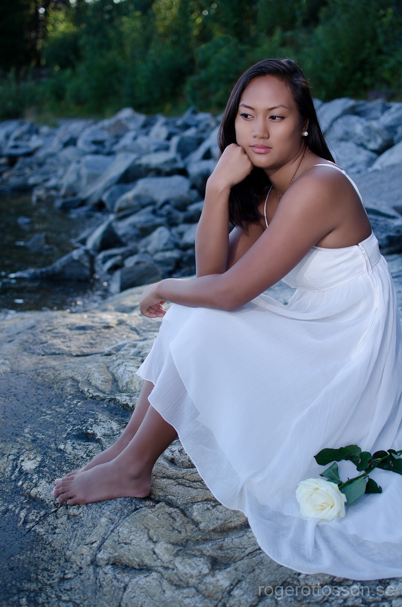

- Kan brodera tavlor
- Pb 110kg i marklyft
- Snarkar tydligen väldigt högt
- Har sytt en balklänning
- En jäkel på barnsånger
- Takk (tecken som stöd, teckenspråk)
Rolig info

Jag heter Michaela, 31 år och adopterad från Filippinerna. Bor i Stenungsund tillsammans med min son, min sambo och hans två barn. Jag har tränat konståkning i 18 år och även arbetat som tränare för alla åldrar. Jag är en rätt glad och positiv prick som gärna provar på nya saker.
Tar mig gärna en tur till gymmet, yogar, är ute i naturen eller springer omkring på lekland med barnen. Annars tycker jag det är roligt att upptäcka nya resmål och matkulturer eller slöa i soffan med en bra serie/film med en stor godispåse.
